CPU Ray Tracer
C++ Academic Project — DigiPen Institute of Technology — 4 Months
Overview
The purpose of this project was to build a deeper understanding of ray tracing by implementing a CPU-based ray tracer from scratch in C++. The work explores core techniques such as ray-geometry intersection testing, illumination and shading models, and antialiasing. In addition to the mathematical and physical principles of ray tracing, this project emphasizes practical implementation and core design decisions involved in constructing a functional renderer.
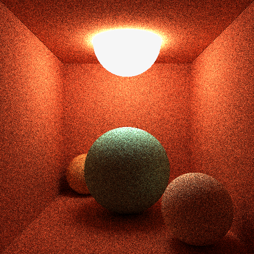
Goals and Constraints
This project was designed as an offline renderer rather than a real-time solution. Real-time ray tracing would require a fundamentally different approach, such as GPU compute shaders for intersection testing, and was outside the scope of this work. As a result, performance tradeoffs inherent to CPU ray tracing were accepted and evaluated accordingly.
Rendering Pipeline
The renderer uses SFML as a minimal interface for window creation and writing pixel data to the frame buffer. Multiple render modes are provided for debugging and visualization, including a diffuse mode that outputs a basic scanline image, a mode for drawing normals, and a full lighting mode that showcases material types under scene illumination
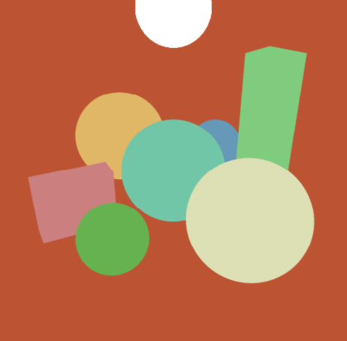
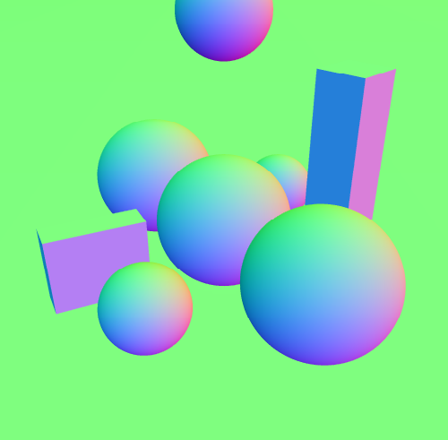
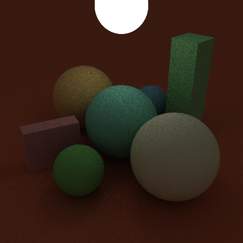
Antialiasing is implemented using a quasi-random R2 sampling pattern to efficiently distribute rays within each pixel. For each sample, an initial ray origin is generated from the R2 sequence, mapped from pixel space into world coordinates, and cast into the scene. Ray-geometry intersection tests are performed to determine visible surfaces, after which the material associated with the intersected object is evaluated to compute contributions. The resulting color values are accumulated across samples and averaged before being written to the frame buffer.
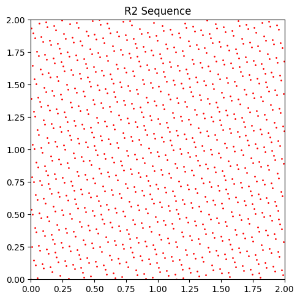
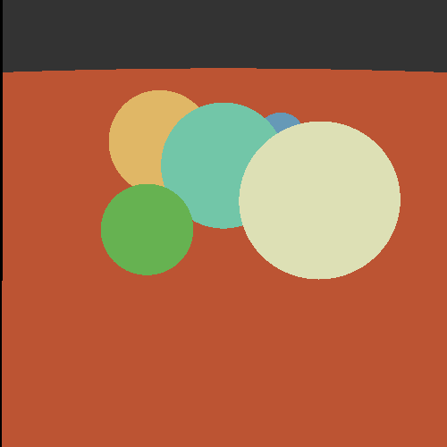
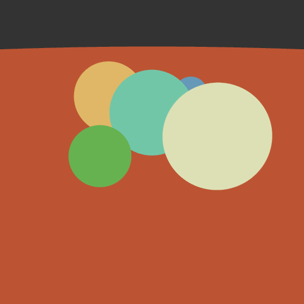
Acceleration Structure
Initial renders of even simple scenes were slow due to the ray-primitive intersection testing, where each ray was tested against every object in the scene. This approach does not scale and quickly becomes impractical as scene complexity increases. To address this, an acceleration structure was introduced to significantly reduce the number of intersection tests performed per ray.
A three-dimensional tree (K-d tree) was implemented to spatially partition scene geometry and prune large portions of the scene during traversal. The 3-d tree uses the Surface Area Heuristic (SAH) for node splitting, producing a hierarchy that minimizes expected traversal and intersection cost. During rendering, rays are tested against bounding volumes first, and primitive intersection tests are only performed for nodes that are potentially intersected.
Materials and Lighting
The renderer supports spherical light sources and three material models: diffuse, specular, and refractive (transmissive). Each material type is demonstrated in the images below to illustrate their respective shading behavior.
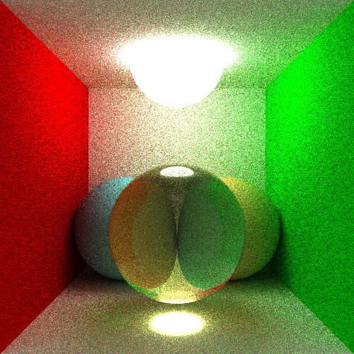
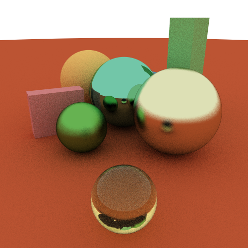
Material evaluation is implemented using a polymorphic design in C++, where a shared material interface defines a common shading function. The individual material types override this interface using virtual functions, allowing shading to be dispatched through a single call without relying on conditional branching based on material type. This approach keeps material logic isolated, improves extensibility, and simplifies integration of additional material models in the future
Environment Sampling
As a final extension to the project, importance-based environment sampling was implemented to improve convergence in globally illuminated scenes. This approach biases ray directions toward regions of the environment map that contribute higher luminance, allowing significant lighting contributions to be captured earlier in the sampling process.
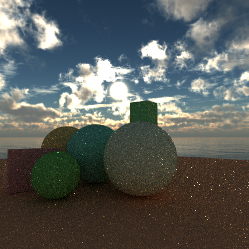
The implementation was informed by existing research and applies luminance-weighted sampling of the environment map to guide ray generation. By sampling in high luminance directions, the renderer achieves brighter, more stable results with fewer samples, reducing the time required for convergence compared to uniform environment sampling.

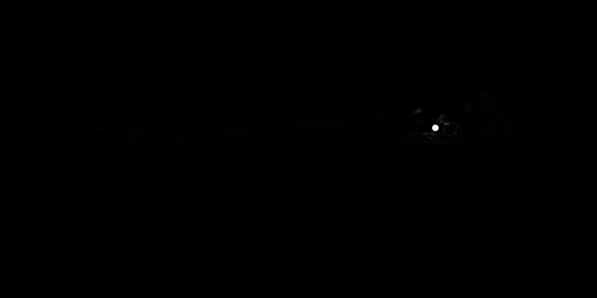
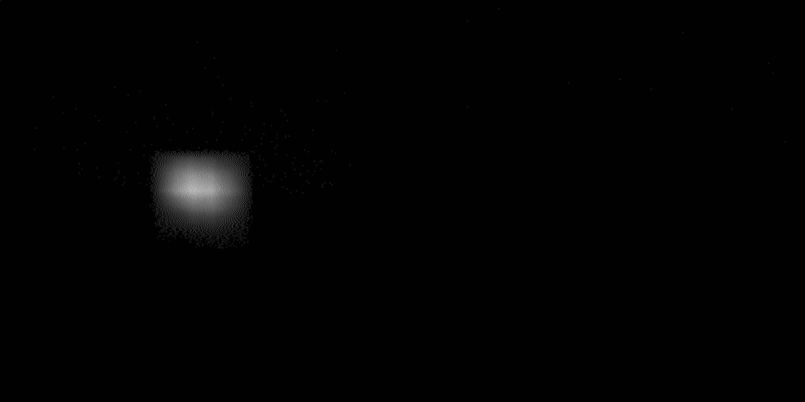
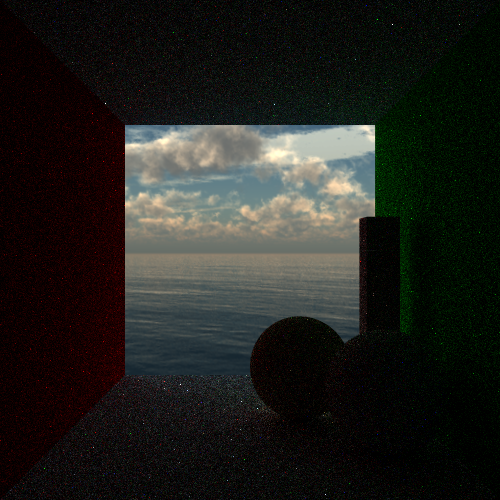
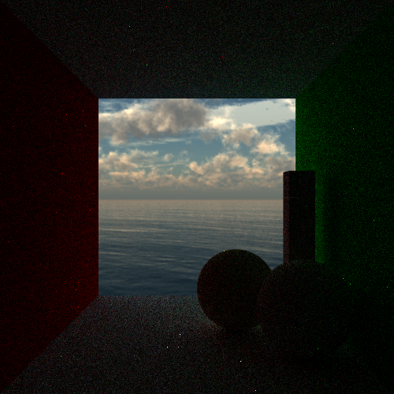
Final Results
This project significantly strengthened my understanding of the physical principles underlying ray tracing, as well as my proficiency in modern C++ and performance-conscious memory management. The implementation makes extensive use of the C++ standard library, including smart pointers and STL containers, to manage object lifetimes and data structures while maintaining readable and maintainable code.
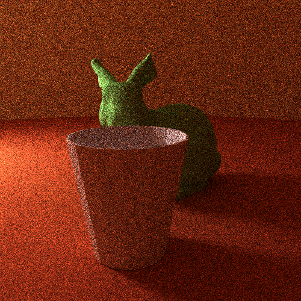
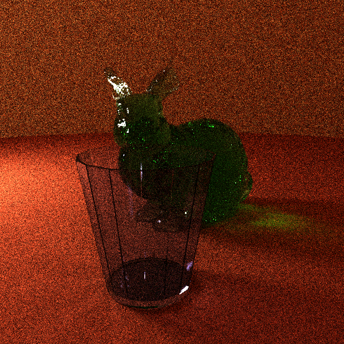
In addition to the implementation work, the project concluded with a written research paper covering the literature and techniques explored during the extended study. That paper is linked below and provides further detail on the theoretical foundations and design considerations that went into the environment sampling.
Potential Improvements
There are several directions in which this project could be extended. The most immediate area for improvement is performance. Significant speedups could be achieved by offloading portions of the rendering pipeline from the CPU to the GPU, particularly for large-scale sampling and intersection workloads.
As scene complexity increases, supporting a large number of light sources would also benefit from additional spatial acceleration. Organizing lights within a dedicated KD-tree or similar structure would allow more efficient light selection and evaluation during shading. Extending the set of supported geometric primitives would further increase scene variety and enable more expressive lighting configurations.
Looking ahead, a natural next step would be the implementation of bidirectional path tracing to further improve convergence in complex lighting scenarios. This would allow the renderer to fully leverage the importance-based environment sampling techniques explored in prior research, including the methods described in the referenced paper below.